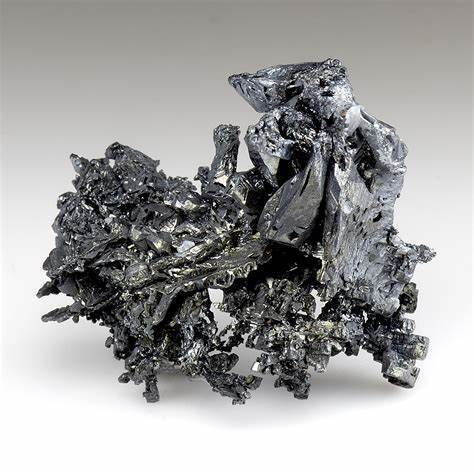

Silver Treasures: Exploring Silver Rocks, Minerals, Gems, and Crystals

Silver, with its lustrous shine and historical significance, is a truly captivating element. This precious metal has been treasured for adornment, currency, and various industrial uses for millennia. While readily associated with jewelry and coins, silver also occurs naturally in a dazzling array of rocks, minerals, gems, and crystals. Let's delve into the fascinating world of these silver treasures and discover how to identify and where to find them.
Silver in Nature
Silver rarely occurs in its pure, elemental form in nature. Instead, it is most commonly found within other minerals as a compound or alloy. Here's a breakdown of how you might find silver naturally:
- Silver Minerals: These are specific mineral species with silver as a key component of their chemical structure. Some examples include:
- Argentite (Ag2S): This is the primary ore of silver, a dark gray to black mineral that's a crucial source of this metal.
- Proustite (Ag3AsS3): Known as "ruby silver" for its bright red color.
- Pyrargyrite (Ag3SbS3): A dark red to black mineral, also called "dark ruby silver".
- Chlorargyrite (AgCl): Also known as "cerargyrite" or "horn silver" due to its waxy texture.
- Silver Alloys: Silver can naturally combine with other metals, forming alloys. A well-known example is electrum, a gold-silver alloy.
- Trace Element in Minerals: Silver can be present in small quantities within various minerals, such as galena (lead sulfide) and tetrahedrite (copper antimony sulfosalt).
Gems and Crystals Containing Silver
While primarily found in opaque minerals, silver can sometimes occur in stunning gemstones and crystals. Here are a few intriguing examples:
- Acanthite (Ag2S): The most common silver sulfide mineral, acanthite is the primary source of silver. It can form well-defined, lustrous black crystals, prized by collectors for their metallic sheen and geometric shapes.
- Freibergite [(Ag,Cu,Fe)12(Sb,As)4S13]: A member of the tetrahedrite group, freibergite contains varying amounts of silver. Its crystals, while less lustrous than acanthite, can be attractive and well-formed, showcasing a more subdued metallic gray.
- Stephanite (Ag5SbS4): This brittle silver sulfosalt occasionally produces striking, dark, metallic prismatic crystals. Collectors value them for their sharp, angular forms.
- Polybasite (Ag16Sb2S11): Another complex silver sulfosalt, polybasite displays metallic black to dark gray colors and can form platy or prismatic crystals. Intricate twinning in some specimens enhances their appeal.
- Pyrargyrite (Ag3SbS3): Known as "dark ruby silver," pyrargyrite boasts a vibrant deep red to purplish-red color, translucent to opaque. Its crystals, often prismatic or pyramidal, display a striking metallic to adamantine (diamond-like) luster.
- Proustite (Ag3AsS3): Proustite's bright red, translucent crystals earned it the name "light ruby silver." Its luster and color make it a highly sought-after collector's mineral.
- Pearceite (Ag16As2S11): Closely related to polybasite, pearceite has a similar chemical formula but boasts a higher silver content. It forms black metallic crystals, sometimes with a reddish tinge, making it less well-known but appealing to collectors.
- Diaphorite (Ag3Pb2Sb3S8): A rarer silver sulfosalt, diaphorite can produce elongated, prismatic crystals with a dark metallic gray color and a bright luster.
- Andorite (PbAgSb3S6): Andorite can form attractive, needle-like, or hair-like prismatic crystals with a metallic luster. Its silver content, while not as high as in some other minerals, still makes it an interesting mineral for its unusual crystal habit.
- Miargyrite (AgSbS2): A monoclinic silver sulfosalt known for its deep red to iron-black color and bright metallic luster. It can form striated, prismatic crystals that add to its aesthetic appeal.
- Pyrostilpnite (Ag3SbS3): Known as "fireblende," this mineral is closely related to pyrargyrite and proustite. It boasts a fiery orange-red color and a distinct adamantine luster, making it a desirable mineral for specimen collectors.
- Samsonite (Ag4MnSb2S6): A rarer silver-bearing mineral, samsonite's well-formed crystals can exhibit a bright metallic luster and a dark reddish-black color. Its crystallographic complexity and silver content make it intriguing for collectors.
Important Notes
- Rarity: Many gems and crystals containing silver are relatively rare and often sought after by collectors.
- Crystal Quality: Well-formed, undamaged crystals with good luster are more desirable and collectible.
- Mineral Associations: The other minerals surrounding or intergrown with silver-bearing specimens can add to their aesthetic and scientific interest.
Identifying Silver Rocks, Minerals, and Crystals

Recognizing potential silver-bearing specimens requires a keen eye and understanding of their characteristics:
- Color: Silver minerals come in a variety of colors. Argentite is typically dark gray to black, while the "ruby silvers" (proustite and pyrargyrite) boast vibrant red hues. Chlorargyrite ranges from colorless to yellow or brown. Keep in mind that other minerals could exhibit similar colors, so color alone isn't definitive.
- Luster: Silver minerals often display a striking metallic luster, meaning they reflect light similarly to polished metal.
- Streak: The streak test involves scratching a mineral against unglazed porcelain. Silver-bearing minerals often leave a gray streak.
- Hardness: Different minerals have varying levels of hardness. You can use the Mohs hardness scale or a simple scratch test with common objects (fingernail, copper penny, etc.) to gauge a specimen's hardness, aiding identification.
- Specific Gravity: Silver minerals tend to be notably dense due to their high silver content. A simple heft test (comparing relative weights) can give a clue regarding their density and potential silver presence.
- Associated Minerals: Specific groups of minerals often occur together. Knowing which minerals are commonly associated with silver specimens can help you narrow down identification in the field.
Where to Find Silver Treasures in the US
The Western United States is a hotbed for silver deposits, with significant historical and active mining districts scattered throughout the region. Let's explore some notable areas:
- Nevada: The "Silver State" boasts a rich mining history. Places like Tonopah, Comstock Lode, and the Rochester District have yielded vast quantities of silver-bearing ores.
- Idaho: The Coeur d'Alene district in Northern Idaho is renowned for its silver-lead-zinc deposits.
- Colorado: Famous mining towns like Leadville, Creede, and Aspen have been major silver producers.
- Arizona: Tombstone is an iconic silver mining town, and other districts like the Globe-Miami and Bisbee areas have contributed significantly.
- Other States: While less famous, states like Montana, Utah, New Mexico, and California also possess noteworthy silver occurrences.
How to Find Silver Treasures
Exploring silver-bearing rocks and minerals can be an exciting and rewarding adventure. Here are a few approaches:
- Research: Start by researching historical mining areas in your region. Geological surveys, mining reports, and rockhounding guides offer valuable insights into past discoveries and potential hot spots.
- Prospecting in Old Mining Areas: Visit abandoned mines (with caution!) and their surrounding dumps. Rock tailings often contain overlooked treasures. Remember, always obtain permission before entering private property.
- Rockhounding: Familiarize yourself with common silver minerals and their identifying traits. Scour promising geological formations, riverbeds, and exposed rock faces for telltale signs of mineralization.
- Metal Detecting: Some metal detectors are sensitive enough to pick up silver specimens, especially those with high native silver content.
- Join a Club or Group: Connect with local rockhounding clubs or mineral societies. Experienced members provide guidance and may organize field trips to potential silver-bearing locations.
Important Considerations and Safety
- Ethical Collecting: It's essential to practice responsible and ethical collecting. Be aware of land ownership status. Always obtain permits or permissions when necessary. Minimize your environmental impact by leaving sites as you found them.
- Safety First: Exploring old mines or remote areas can pose inherent dangers. Research locations thoroughly, go prepared with appropriate gear, and never explore alone. Be mindful of unstable ground, potential collapses, and the presence of harmful minerals.
RELATED TOPIC: Exploring the Diverse World of Purple Crystals and Gemstones
Beyond the Rocks: Uses of Silver

Silver's unique properties have made it a valuable commodity across various industries and applications. Let's highlight some of its key uses:
- Jewelry and Silverware: The bright sheen and malleability of silver make it an evergreen favorite for creating beautiful jewelry, tableware, and decorative objects.
- Currency and Investment: Silver has a long history as coinage metal and a store of value. Silver bullion and coins are popular investment choices.
- Electronics and Industry: Excellent electrical conductivity makes silver vital in electrical contacts, switches, and various electronic components. Industrial applications range from solar panels to chemical production.
- Antibacterial Properties: Silver boasts antimicrobial properties. It's used in wound dressings, water purification, and coatings for various surfaces.
- Photography: Historically, silver compounds played a key role in traditional film photography, although their use has decreased with the advent of digital imaging.
- Other Uses: Silver finds diverse applications, including mirrors, batteries, brazing alloys, and even as a catalyst in specific chemical reactions.
The Allure of Silver Treasures
The discovery of a glint of silver within a rock or an intricately formed silver crystal can send a thrill of excitement through any prospector or rockhound. Beyond its economic value, silver holds a unique allure:
- Aesthetics: The soft luster and potential for intricate crystal formations make silver specimens visually pleasing.
- Historical Connection: Silver represents a link to a rich history of mining, wealth, and human ingenuity across cultures and civilizations.
- Scientific Fascination: The varied forms in which silver occurs in nature underscore the marvelous complexity and beauty of the mineral world.
Embracing the Hunt
Whether you aim to find a hefty chunk of silver ore, a dazzling crystal specimen, or simply to learn more about the natural world, embracing the hunt for silver treasures provides a unique blend of adventure, scientific discovery, and perhaps a sprinkle of fortune. By equipping yourself with knowledge, respect for the environment, and a sense of wonder, your silver explorations can be a fulfilling and rewarding journey.